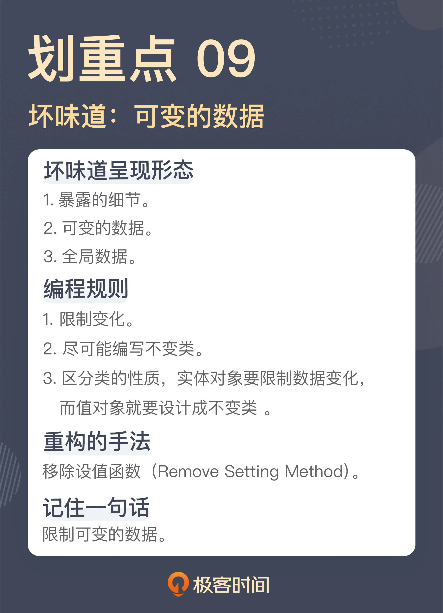

- 00 开篇词 这一次，我们从“丑”代码出发.md.html
- 01 缺乏业务含义的命名：如何精准命名？.md.html
- 02 乱用英语：站在中国人的视角来看英文命名.md.html
- 03 重复代码：简单需求到处修改，怎么办？.md.html
- 04 长函数：为什么你总是不可避免地写出长函数？.md.html
- 05 大类：如何避免写出难以理解的大类？.md.html
- 06 长参数列表：如何处理不同类型的长参数？.md.html
- 07 滥用控制语句：出现控制结构，多半是错误的提示.md.html
- 08 缺乏封装：如何应对火车代码和基本类型偏执问题？.md.html
- 09 可变的数据：不要让你的代码“失控”.md.html
- 10 变量声明与赋值分离：普通的变量声明，怎么也有坏味道？.md.html
- 11 依赖混乱：你可能还没发现问题，代码就已经无法挽救了.md.html
- 12 不一致的代码：为什么你的代码总被吐槽难懂？.md.html
- 13 落后的代码风格：使用“新”的语言特性和程序库升级你的代码.md.html
- 14 多久进行一次代码评审最合适？.md.html
- 15 新需求破坏了代码，怎么办？.md.html
- 16 熊节：什么代码应该被重构？.md.html
- 17 课前作业点评：发现“你”代码里的坏味道.md.html
- 结束语 写代码是一件可以一生精进的事.md.html
- 捐赠
09 可变的数据：不要让你的代码“失控”
你好，我是郑晔。
最近几讲，我们讨论的坏味道挑战了很多人的编程习惯，明明很习惯的编码方式，如今却成了坏味道。这一讲，我们再来说一类这样的坏味道：可变的数据。
对于程序，最朴素的一种认知是“程序 = 数据结构 + 算法”，所以，数据几乎是软件开发最核心的一个组成部分。在一些人的认知中，所谓做软件，就是一系列的 CRUD 操作，也就是对数据进行增删改查。再具体一点，写代码就把各种数据拿来，然后改来改去。我们学习编程时，首先学会的，也是给变量赋值，写出类似 a = b + 1之类的代码。
改数据，几乎已经成了很多程序员写代码的标准做法。然而，这种做法也带来了很多的问题。这一讲，我们还是从一段问题代码开始。
满天飞的 Setter
还记得我们在[开篇词]里提到过的一个坏味道吗？我们复习一下：
public void approve(final long bookId) {
...
book.setReviewStatus(ReviewStatus.APPROVED);
...
}
这是一段对作品进行审核的代码，通过 bookId，找到对应的作品，接下来，将审核状态设置成了审核通过。
我当时之所以注意到这段代码，就是因为这里用了 setter。setter 往往是缺乏封装的一种做法。对于缺乏封装的坏味道，我们上节课已经用了一讲的篇幅在说，我提到，很多人在写代码时，写完字段就会利用 IDE 生成 getter，实际情况往往是，生成 getter 的同时，setter 也生成了出来。setter 同 getter 一样，反映的都是对细节的暴露。
这就意味着，你不仅可以读到一个对象的数据，还可以修改一个对象的数据。相比于读数据，修改是一个更危险的操作。
我在《[软件设计之美]》专栏里讲函数式编程的不变性时，曾经专门讨论过可变的数据会带来许多问题，简言之，你不知道数据会在哪里被何人以什么方式修改，造成的结果是，别人的修改会让你的代码崩溃。与之相伴的还有各种衍生出来的问题，最常见的就是我们常说的并发问题。
可变的数据是可怕，但是，比可变的数据更可怕的是，不可控的变化，而暴露 setter 就是这种不可控的变化。把各种实现细节完全交给对这个类不了解的使用者去修改，没有人会知道他会怎么改，所以，这种修改完全是不可控的。
缺乏封装再加上不可控的变化，在我个人心目中，setter 几乎是排名第一的坏味道。
在开篇词里，我们针对代码给出的调整方案是，用一个函数替代了 setter，也就是把它用行为封装了起来：
public void approve(final long bookId) {
...
book.approve();
...
}
通过在 Book 类里引入了一个 approve 函数，我们将审核状态封装了起来。
class Book {
public void approve() {
this.reviewStatus = ReviewStatus.APPROVED;
}
}
作为这个类的使用者，你并不需要知道这个类到底是怎么实现的。更重要的是，这里的变化变得可控了。虽然审核状态这个字段还是会修改，但你所有的修改都要通过几个函数作为入口。有任何业务上的调整，都会发生在类的内部，只要保证接口行为不变，就不会影响到其它的代码。
setter 破坏了封装，相信你对这点已经有了一定的理解。不过，有时候你会说，我这个 setter 只是用在初始化过程中，而并不需要在使用的过程去调用，就像下面这样：
Book book = new Book();
book.setBookId(bookId);
book.setTitle(title);
book.setIntroduction(introduction);
实际上，对于这种只在初始化中使用的代码，压根没有必要以 setter 的形式存在，真正需要的是一个有参数的构造函数：
Book book = new Book(bookId, title, introduction);
消除 setter ，有一种专门的重构手法，叫做移除设值函数（Remove Setting Method）。总而言之，setter 是完全没有必要存在的。
在今天的软件开发中，人们为了简化代码的编写做出了各种努力，用 IDE 生成的代码是一种，还有一种常见的做法就是，通过工具和框架生成相应代码的。在 Java 世界中，Lombok 就是这样的一种程序库，它可以在编译的过程中生成相应的代码，而我们需要做的，只是在代码上加上对应的 Annotation。它最大的优点是不碍眼，也就是不会产生大量可以看见的代码。因为它的代码是在编译阶段生成的，所以，那些生成的代码在源码级别上是不存在的。下面就是一个例子：
@Getter
@Setter
class Book {
private BookId bookId;
private String title;
private String introduction;
}
这里的 @Getter 表示为这个类的字段生成 getter，相应地，@Setter 表示生成 setter。也是因为这些 Annotation 的存在，让代码看上去清爽了不少。所以，像 Lombok 这样的程序库赢得了许多人的喜爱。
不过，我想说的是，不写 setter 的代码并不代表没有 setter。因为 @Setter 的存在，其它代码还是可以调用这个类的 setter，存在的问题并不会改变。所以，一个更好的做法是禁用 @Setter。下面是 lombok.config 的配置，通过它，我们就可以禁用 @Setter 了：
lombok.setter.flagUsage = error
lombok.data.flagUsage = error
你或许注意到了，这里除了 @Setter，我还禁用了 @Data，这是 Lombok 中另外一个 Annotation，表示的是同时生成 getter 和 setter。既然我们禁用 @Setter 是为了防止生成 setter，当然也要禁用 @Data 了。
可变的数据
我们反对使用 setter，一个重要的原因就是它暴露了数据，我们前面说过，暴露数据造成的问题就在于数据的修改，进而导致出现难以预料的 Bug。在上面的代码中，我们把 setter 封装成一个个的函数，实际上是把不可控的修改限制在一个有限的范围内。
那么，这个思路再进一步的话，如果我们的数据压根不让修改，犯下各种低级错误的机会就进一步降低了。没错，在这种思路下，可变数据（Mutable Data）就成了一种坏味道，这是 Martin Fowler 在新版《重构》里增加的坏味道，它反映着整个行业对于编程的新理解。
这种想法源自函数式编程这种编程范式。在函数式编程中，数据是建立在不改变的基础上的，如果需要更新，就产生一份新的数据副本，而旧有的数据保持不变。随着函数式编程在软件开发领域中的地位不断提高，人们对于不变性的理解也越发深刻，不变性有效地解决了可变数据产生的各种问题。
所以，Martin Fowler 在《重构》第二版里新增了可变数据作为一种坏味道，这其实反映了行业的理解也是在逐渐推进的。不过，Martin Fowler 对于可变数据给出的解决方案，基本上是限制对于数据的更新，降低其风险，这与我们前面提到的对 setter 的封装如出一辙。
解决可变数据，还有一个解决方案是编写不变类。
我在《[软件设计之美]》专栏中已经讲过函数式编程的不变性，其中的关键点就是设计不变类。Java 中的 String 类就是一个不变类，比如，如果我们把字符串中的一个字符替换成另一个字符，String 类给出的函数签名是这样的：
String replace(char oldChar, char newChar);
其含义是，这里的替换并不是在原有字符串上进行修改，而是产生了一个新的字符串。
那么，在实际工作中，我们怎么设计不变类呢？要做到以下三点：
所有的字段只在构造函数中初始化；
所有的方法都是纯函数；
如果需要有改变，返回一个新的对象，而不是修改已有字段。
回过头来看我们之前改动的“用构造函数消除 setter”的代码，其实就是朝着这个方向在迈进。如果按照这个思路改造我们前面提到的 approve 函数，同样也可以：
class Book {
public Book approve() {
return new Book(..., ReviewStatus.APPROVED, ...);
}
}
这里，我们创建出了一个“其它参数和原有 book 对象一模一样，只是审核状态变成了 APPROVED ”的对象。
在 JDK 的演化中，我们可以看到一个很明显的趋势，新增的类越来越多地采用了不变类的设计，比如，用来表示时间的类。原来的 Date 类里面还有各种 setter，而新增的 LocalDateTime 则一旦初始化就不会再修改了。如果要操作这个对象，则会产生一个新的对象：
LocalDateTime twoDaysLater = now.plusDays(2);
就目前的开发状态而言，想要完全消除可变数据是很难做到的，但我们可以尽可能地编写一些不变类。
一个更实用的做法是，区分类的性质。我《[软件设计之美]》中讲 DDD 的战术设计时提到过，我们最核心要识别的对象分成两种，实体和值对象。实体对象要限制数据变化，而值对象就要设计成不变类。
如果你还想进一步提升自己对于不变性的理解，我们可以回到函数式编程这个编程范式的本质，它其实是对程序中的赋值进行了约束。基于这样的理解，连赋值本身其实都会被归入到坏味道的提示，这才是真正挑战很多人编程习惯的一点。
不过，我们现在看到，越来越多的语言中开始引入值类型，也就是初始化之后便不再改变的值，比如，Java 的 Valhalla 项目，更有甚者，像 Rust 这样的语言中，缺省都是值类型，而如果你需要一个可以赋值的变量，反而要去专门的声明。
Martin Fowler 在《重构》中还提到一个与数据相关的坏味道：全局数据（Global Data）。如果你能够理解可变数据是一种坏味道，全局数据也就很容易理解了，它们处理手法基本上是类似的，这里我就不再做过多的阐述了。
总结时刻
今天我们又讲了一类与很多人编程习惯不符的坏味道：可变的数据。
可变数据最直白的体现就是各种 setter。setter 一方面破坏了封装，另一方面它会带来不可控的修改，给代码增添许多问题。解决它的一种方式就是移除设值函数（Remove Setting Method），将变化限制在一定的范围之内。
可变数据是《重构》第二版新增的坏味道，这其实反映了软件开发行业的一种进步，它背后的思想是函数式编程所体现的不变性。解决可变数据，一种方式是限制其变化，另一种方式是编写不变类。
在实践中，完全消除可变数据是很有挑战的。所以，一个实际的做法是，区分类的性质。值对象就要设计成不变类，实体类则要限制数据变化。
函数式编程的本质是对于赋值进行了约束，我们甚至可以把赋值作为一种坏味道的提示。很多编程语言都引入了值类型，而让变量成为次优选项。
如果今天的内容你只能记住一件事，那请记住：限制可变的数据。

思考题
这一讲我们讲了可变的数据，你在实际工作遇到过因为数据变动而产生的问题吗？或者你设计过不变类吗？欢迎在留言区分享你的经验。
© 2019 - 2023 Liangliang Lee. Powered by gin and hexo-theme-book.